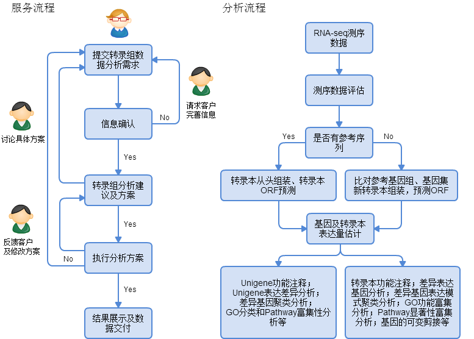

转录组分析
转录组测序的研究对象为特定细胞在某一功能状态下所能转录出来的所有RNA的总和，主要包括mRNA和非编码RNA。转录组研究是基因功能及结构研究的基础和出发点。通过新一代高通量测序，能够全面快速地获得某一物种特定组织或器官在某一状态下的几乎所有转录本序列信息，已广泛应用于基础研究、临床诊断和药物研发等领域。由于参考基因组、数据库信息的不断更新，所得到的RNA-seq数据也迫切需要重新分析。周易数据分析团队不仅提供转录组测序数据从头分析，还提供基于最新的数据库信息转录组数据重新分析服务，能够让研究最大限度利用转录组数据辅助生物学研究及药物和工程技术的开发。
服务及分析流程

转录组数据整理
- 数据所属样品信息：人肌肉组织、老鼠肝组织、水稻根组织等；
- 样品对照设计：对照比较策略；
- 测序平台：Solexa, Illumina 2000, Life science 454 FLX, MiSeq 等；
- 数据分析目的：生物学假设，基因寻找等；
- 其它信息，提供详尽的信息有利于分析员给出合理有价值的建议。
参考文献：
- Trapnell, Cole, et al. "Transcript assembly and quantification by RNA-Seq reveals unannotated transcripts and isoform switching during cell differentiation." Nature biotechnology 28.5 (2010): 511-515.
- Morozova, Olena, Martin Hirst, and Marco A. Marra. "Applications of new sequencing technologies for transcriptome analysis." Annual review of genomics and human genetics 10 (2009): 135-151.
- Mortazavi, Ali, et al. "Mapping and quantifying mammalian transcriptomes by RNA-Seq." Nature methods 5.7 (2008): 621-628.
周易数据团队所收集的数据集均来自开源公共生物信息数据库。
所有研究材料和技术数据的交流，周易数据团队会严格遵守保密协议，不会向任何第三方透露相关信息。
欢迎客户来电咨询，如有分析需求，请整理RNA数字表达谱数据信息并发送至zyxdata@163.com，我们会尽快回复客户。
注意：测序原始数据，将会在信息确认后，通过其它方法上传。